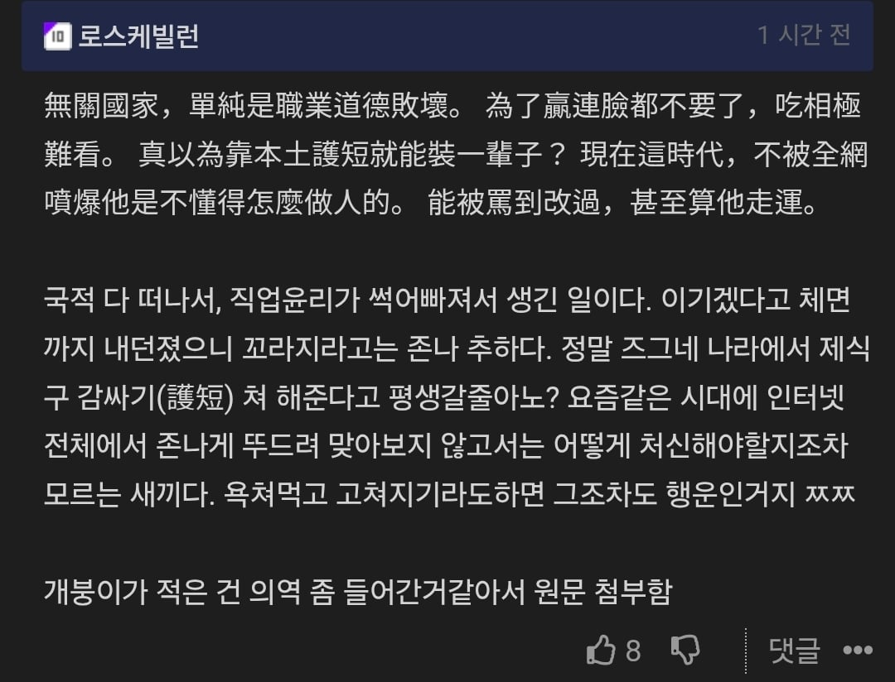
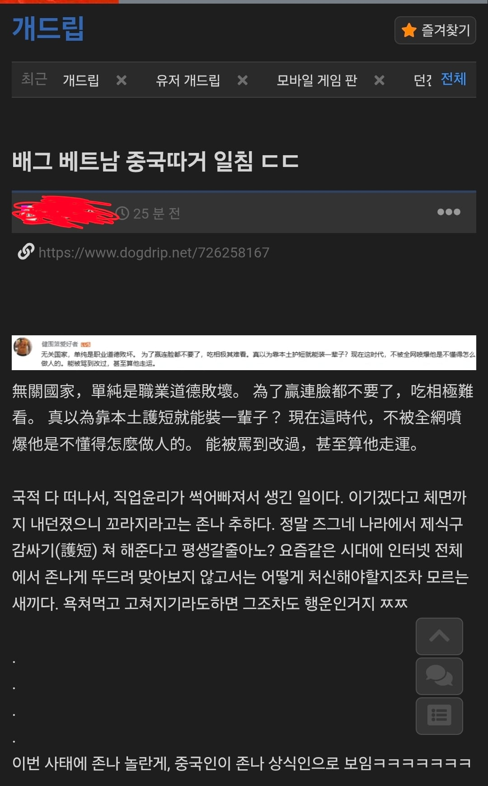
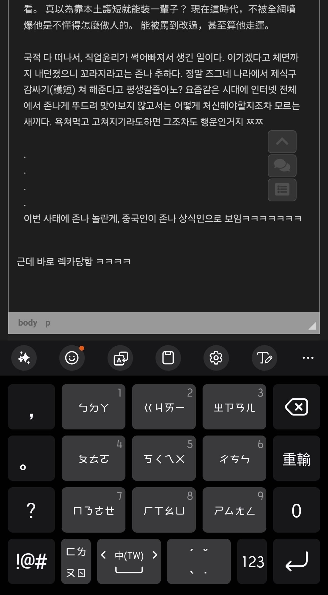

이전글 : https://www.dogdrip.net/726231193
3시간전즈음에 올라온 중국인 일침글 올라왔길래

원본글을 좀 더 뉘앙스를 살려서 번역했었음.

근데 바로 렉카당함 ㅋㅋㅋㅋ

난 중국어 입력기 자체가 버뻐머뻐라 중국어 쓰면 번체로 나오는데 그거까지 긁어가면 어떡하니...
이게 고렙의 초식이란것이구나...
이전글 : https://www.dogdrip.net/726231193
3시간전즈음에 올라온 중국인 일침글 올라왔길래

원본글을 좀 더 뉘앙스를 살려서 번역했었음.

근데 바로 렉카당함 ㅋㅋㅋㅋ

난 중국어 입력기 자체가 버뻐머뻐라 중국어 쓰면 번체로 나오는데 그거까지 긁어가면 어떡하니...
이게 고렙의 초식이란것이구나...
익게글도 렉카하는데 뭘 처음보는것처럼
이제 이 글도 액자식 렉카함
뭘어쩌라는건지
맨날 렉카질하다가 자기가 쓴 글 렉카돼서 기뻤대!
ㅋㅋㅋ 좋아요 1개 받을때마다 기뻐 날뛰면서 댓글 수정하는 잼민이같음 ㄹㅇ
키보드 이런느낌임 ጿ ኈ ቼ ዽ ጿ
와 중국어 키보드 처음봄 ㅋㅋㅋ
뭐 어쩌라는걸까? 작성한 댓글에 소유권이라도 주장하고싶은거임?
그냥 와 신기해~ 라는 감상을 길게 풀어쓴거라고 생각하면댐
와 세종대왕님 감사합니다 시발 눈앞이 캄캄하네 한자 키보드ㅋㅋㅋㅋㅋㅋ
근데 저거 보고 왔는데
구어체인줄은 어케 아는거야
배우면 알게되나
구어체스런 표현들도 많이 보이고, 일단 현대 표준중국어는 기본이 구어체라서 통신체 = 구어체라고 생각하면 됨.
서적이나 논평같은 데 쓰이는 문어체는 한문마냥 於、與、之、而、其、若、乃、則、亦 같은 기능어들 들어가서 확 튐.
人人生而自由，在尊嚴和權利上一律平等。他們賦有理性和良心，並應以兄弟關係的精神互相對待。
모든 사람은 태어날 때부터 자유롭고, 존엄성과 권리에 있어서 평등하다. 사람은 이성과 양심을 부여받았으며 서로에게 형제의 정신으로 대하여야 한다.
이런 느낌.
그렇군
원문은 간첸데 왜 번체로 썼나했다
여기도 그쪽 멀티 된지도 꽤 오래라 ㅋㅋ..